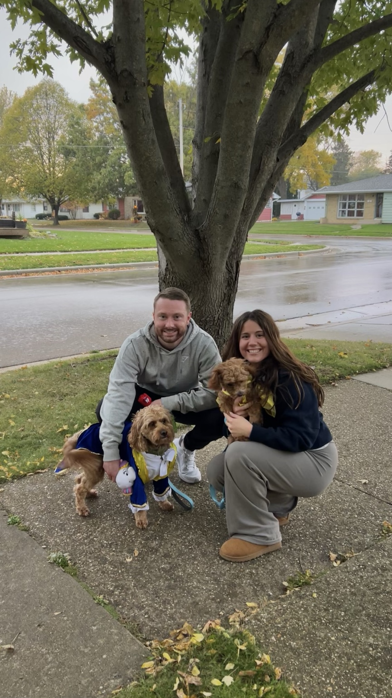

Exploring Wisconsin one little adventure at a time.
Welcome to Little Paws, Big Adventures, a website created to help small dogs and their families discover enjoyable places throughout Wisconsin. Many dog-friendly guides focus on long hikes and high-energy adventures, but not every outing has to be miles of trail. Sometimes the best memories come from a relaxing walk, a lakeside picnic, or simply finding a new place to explore together.
Whether you're planning your next weekend outing or searching for a new favorite destination, we hope these guides inspire you to enjoy more adventures with your four-legged companions.

Discover state parks, scenic overlooks, easy walking trails, beaches, and beautiful natural areas that are perfect for spending time outside.
Sometimes the best adventures happen at a slower pace. Find ideas for picnics, coffee shops, botanical gardens, patios, and peaceful afternoons around Wisconsin.
Celebrate every season with favorite Wisconsin traditions including apple orchards, holiday lights, festivals, farmers markets, and more.
Looking for ideas to celebrate birthdays, anniversaries, family outings, or other memorable moments? Explore destinations that make every occasion feel a little more special.
Visit Travel Wisconsin for additional travel ideas, events, and destinations throughout the state.